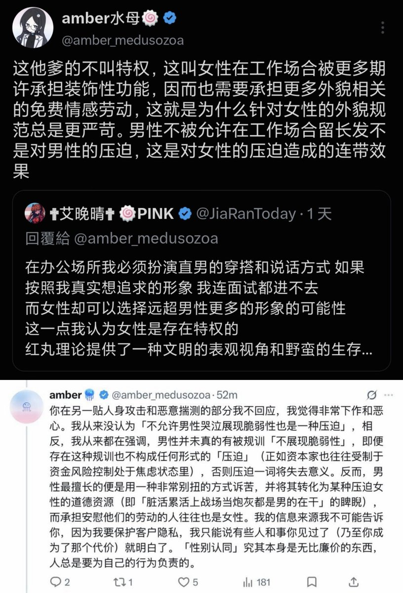

你的阅读理解能力令人担忧，你原来附了三张截图，删除后只保留了一张截图，我认为非常遗憾，因为这三张图实则是都是我表达精确立场自洽的明证；它们展现出：我自始至终压根没说这不叫侵害，我分析的是不同类型的侵害发生的过程，以及它们该如何被与其它类型的侵害关联起来。
对于第一张（也就是你现在放的这张）截图，我说的是女性在工作场合中可以穿更多衣服这不叫特权，男性受到的限制是针对女性的压迫的连带效果。对于第二张张截图，我说的是被规训不能哭不叫被压迫，这同样是对女性的压迫造成的连带效果。对于第三张截图，我说的是跨性别者的身份并不由纯粹心理意义上的身份认同构成，而来自于你在社会中作为自己认同的那个性别被识别和对待的物质过程，这意味着如果你作为一名跨女拒绝女性身份乃至主动体认男性的特权位置，你就成为了暴力的共谋。
自始至终我没有说任何人「不被侵害」，我说的是这些不同的侵害并非是逻辑上等价的，它们是在一个整体的结构互相关联并以差异化的形式发挥作用的；正如我之前所说，「痛苦」作为质料是无法被相互比较的，但创造痛苦、使不同痛苦之间彼此关联的机制是需要被系统分析的，否则你永远无法结束这种生产痛苦的结构。剥离不同侵害之间表面上的等同性，进行这种可以描述它们如何在一种更宏观的结构中彼此关联的分析，才是一个自诩反对这些侵害和痛苦的人应尽的义务。
对于第一张（也就是你现在放的这张）截图，我说的是女性在工作场合中可以穿更多衣服这不叫特权，男性受到的限制是针对女性的压迫的连带效果。对于第二张张截图，我说的是被规训不能哭不叫被压迫，这同样是对女性的压迫造成的连带效果。对于第三张截图，我说的是跨性别者的身份并不由纯粹心理意义上的身份认同构成，而来自于你在社会中作为自己认同的那个性别被识别和对待的物质过程，这意味着如果你作为一名跨女拒绝女性身份乃至主动体认男性的特权位置，你就成为了暴力的共谋。
自始至终我没有说任何人「不被侵害」，我说的是这些不同的侵害并非是逻辑上等价的，它们是在一个整体的结构互相关联并以差异化的形式发挥作用的；正如我之前所说，「痛苦」作为质料是无法被相互比较的，但创造痛苦、使不同痛苦之间彼此关联的机制是需要被系统分析的，否则你永远无法结束这种生产痛苦的结构。剥离不同侵害之间表面上的等同性，进行这种可以描述它们如何在一种更宏观的结构中彼此关联的分析，才是一个自诩反对这些侵害和痛苦的人应尽的义务。
